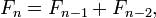
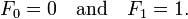

Objective-C Programming in LinuxThursday, May 5, 2011
The basics of Objective-C are supported by the GNU compiler collection. In order to utilize the full power of Objective-C together with the Cocoa openStep environments on Linux, it is necessary to install gcc, the gcc Objective-C support package and the GNUstep environment.
The gcc Objective-C support can be installed on Linux simply by installing the gcc-objc package which is available with all Linux distributions. There are, however, two different paths to installing GNUstep. On those Linux distributions for which pre-built GNUstep packages are provided this is simply a matter of issuing the appropriate command to install GNUstep. On Linux distributions for which pre-built packages are not available, the process involves downloading the GNUstep source code and then building and installing the packages manually.
Installing GNUstep on Red Hat/Fedora
$ sudo yum install gcc gcc-objc gnustep-examples gnustep-back gnustep-base gnustep-base-devel gnustep-base-doc gnustep-filesystem gnustep-gui gnustep-gui-devel gnustep-gui-doc gnustep-gui-libs gnustep-make gnustep-make-doc
Finding Fibonacci Numbers
In mathematics, the Fibonacci numbers are the numbers in the following integer sequence:
0, 1, 1, 2, 3, 5, 8, 13, 21, 34, 55, 89, 144, ...
By definition, the first two Fibonacci numbers are 0 and 1, and each subsequent number is the sum of the previous two.
In mathematical terms, the sequence Fn of Fibonacci numbers is defined by the recurrence relation

with seed values

The Fibonacci sequence is named after Leonardo of Pisa, who was known as Fibonacci. Fibonacci's 1202 book Liber Abaci introduced the sequence to Western European mathematics, although the sequence had been described earlier in Indian mathematics. (By modern convention, the sequence begins with F0=0. The Liber Abaci began the sequence with F1 = 1, omitting the initial 0, and the sequence is still written this way by some.)
Fibonacci numbers are closely related to Lucas numbers in that the are a complementary pair of Lucas sequences. They are intimately connected with the Golden ratio, for example the closest rational approximations to the ratio are 2/1, 3/2, 5/3, 8/5, ... . Applications include computer algorithms such as the Fibonacci search technique and the Fibonacci heap data structure, and graphs called Fibonacci cubes used for interconnecting parallel and distributed systems. They also appear in biological settings, such as branching in trees, arrangement of leaves on a stem, the fruit spouts of a pineapple, the flowering of artichoke, an uncurling fern and the arrangement of a pine cone.
Source code
main.m
/* * Copyright (C) 2011 by Andrey Pudov * * Permission is hereby granted, free of charge, to any person obtaining a copy * of this software and associated documentation files (the "Software"), to deal * in the Software without restriction, including without limitation the rights * to use, copy, modify, merge, publish, distribute, sublicense, and/or sell * copies of the Software, and to permit persons to whom the Software is * furnished to do so, subject to the following conditions: * * The above copyright notice and this permission notice shall be included in * all copies or substantial portions of the Software. * * THE SOFTWARE IS PROVIDED "AS IS", WITHOUT WARRANTY OF ANY KIND, EXPRESS OR * IMPLIED, INCLUDING BUT NOT LIMITED TO THE WARRANTIES OF MERCHANTABILITY, * FITNESS FOR A PARTICULAR PURPOSE AND NONINFRINGEMENT. IN NO EVENT SHALL THE * AUTHORS OR COPYRIGHT HOLDERS BE LIABLE FOR ANY CLAIM, DAMAGES OR OTHER * LIABILITY, WHETHER IN AN ACTION OF CONTRACT, TORT OR OTHERWISE, ARISING FROM, * OUT OF OR IN CONNECTION WITH THE SOFTWARE OR THE USE OR OTHER DEALINGS IN * THE SOFTWARE. */ #import <stdio.h> #import <stdlib.h> #import <Foundation/Foundation.h> #import "Fibonacci.h" int main(int argc, const char **argv) { /* * The NSAutoreleasePool class is used to support Cocoa’s reference-counted * memory management system. An autorelease pool stores objects that are sent * a release message when the pool itself is drained. */ NSAutoreleasePool *pool = [[NSAutoreleasePool alloc] init]; /* parsing command-line arguments */ if (argc != 2) { /* print argv[0] assuming it is the program name */ printf("Usage: %s index\n", *argv); return (EXIT_SUCCESS); } Fibonacci *fibonacci = [[Fibonacci alloc] init]; int index = atoi(*(argv + 1)); if ((index > 0) && (index < 94)) { unsigned long t = [fibonacci getFibonacci2: index]; printf("%lu\n", t); } else if ((index > 93) && (index < 791)) { NSLog(@"%@", [fibonacci getFibonacci4: index]); } else { printf("Invalid argument: parameter index is out of range {1...790}\n"); } [fibonacci release]; [pool drain]; return (EXIT_SUCCESS); }
Fibonacci.h
#import <Foundation/Foundation.h> #import <Foundation/NSObject.h> @interface Fibonacci: NSObject { /* * establish a memoization "cache", which stores previously computed * fibonacci numbers */ NSMutableArray *fibCache; } -(unsigned long) getFibonacci: (int) n; -(unsigned long) getFibonacci2: (int) n; -(unsigned long) getFibonacci3: (int) n; -(NSDecimalNumber*) getFibonacci4: (int) n; @end
Fibonacci.m
#import "Fibonacci.h" @implementation Fibonacci /* constructor */ -(id) init { if (self = [super init]) { /* initialization code */ fibCache = [[NSMutableArray alloc] init]; [fibCache addObject:[[[NSDecimalNumber alloc] initWithInt:0] autorelease]]; [fibCache addObject:[[[NSDecimalNumber alloc] initWithInt:1] autorelease]]; } return self; } /* destructor */ - (void)dealloc { /* release owned objects */ [fibCache release]; [super dealloc]; } /* simple routine uses recursion to calculate Fibonacci numbers */ -(unsigned long) getFibonacci: (int) n { if (n < 2) { return n; } else { return [self getFibonacci: n - 1] + [self getFibonacci: n - 2]; } } /** * Although it is based directly on the definition of a Fibonacci number, * the recursive Fibonacci algorithm is extremely expensive, requiring * time O(2^n). It also performs a huge amount of redundant work because it * computes many Fibonnaci values from scratch many times. A simple * linear-time iterative approach which calculates each value of getFibonacci2 * successively can avoid these issues: */ -(unsigned long) getFibonacci2: (int) n { unsigned long prev1 = 0; unsigned long prev2 = 1; for (int i = 0; i < n; ++i) { unsigned long savePrev1 = prev1; prev1 = prev2; prev2 = savePrev1 + prev2; } return prev1; } /* * The recursive implementation given above is elegant and close to the * mathematical definition, it is not very practical. Calculating the nth * fibonacci number requires calculating two smaller fibonacci numbers, which * in turn require two additional recursive calls each, and so on until all * branches reach 1. The iterative solution is faster, but still repeats a lot * of calculations when computing successive fibonacci numbers. To remedy this, * we can employ memoization to cache previous computations. */ /* the recursive implementation for small numbers {1..93} */ -(unsigned long) getFibonacci3: (int) n { unsigned long *val = (unsigned long*) malloc(100 * sizeof(unsigned long)); if (n < 2) { return n; } else { val[0] = 1; val[1] = 1; for (int i =2; i < n; ++i) { val[i] = val[i - 1] + val[i - 2]; } return val[n - 1]; } } /* the recursive implementation for big numbers {94..790} */ -(NSDecimalNumber*) getFibonacci4: (int) n { /* memoized recursion */ if (n >= [fibCache count]) { [fibCache addObject: [[self getFibonacci4: n - 1] decimalNumberByAdding: [self getFibonacci4: n - 2]]]; } return [fibCache objectAtIndex: n]; } @end
Compiling
Objective-C code can be compiled using the GNU C compiler gcc. Objective-C interface files usually marked by the extension .h as in Fibonacci.h. Implementation files are usually marked by the extension .m as in Fibonacci.m. The implementation file should #import its corresponding interface file. The main program should also #import the interface files of all of the classes it uses.
Compiling by hand
The trivial way to compile the files and obtain an executable, is by running the command:
gcc -Wno-import -std=c99 -lobjc -lgnustep-base -ldl -lm -fconstant-string-class=NSConstantString -o fibonacci main.m Fibonacci.m && ./fibonacci
Using a makefile to compile a program
In software development, make is a utility that automatically builds executable programs and libraries from source code by reading files called makefiles which specify how to derive the target program. Make can decide where to start through topological sorting.
# Makefile to build Fibonacci program # --- macros CC = gcc SOURCES = main.m Fibonacci.m OBJECTS = main.o Fibonacci.o CFLAGS = -Wno-import -std=c99 -O2 -fconstant-string-class=NSConstantString LIBS = -lobjc -lgnustep-base -ldl -lm # --- targets main: $(OBJECTS) $(CC) $(LIBS) $(OBJECTS) -o fibonacci Fibonacci.o: Fibonacci.m Fibonacci.h $(CC) $(CFLAGS) -c Fibonacci.m main.o: main.m $(CC) $(CFLAGS) -c main.m clean: rm -rf *.o *~ fibonacci
Executing the program will result in output similar to the following:
./fibonacci 66 27777890035288 ./fibonacci 150 fibonacci[4085] 9.9692166771893033862144057602E30